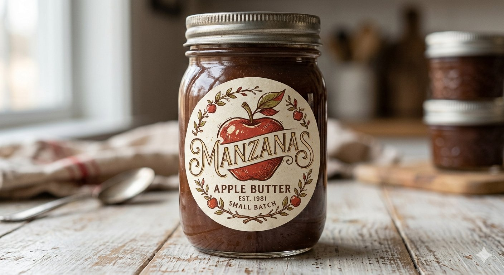

Welcome to our Family Table
Handcrafted right here in Columbus, Ohio, Manzanas brings small-batch, limited-edition apple butter directly from local orchards to your home. Every single batch is nested in memories, holiday aromas, and local love.

Apple of the Month
The Honeycrisp Batch
Batch Size: Strictly limited to 50-100 Jars
This month, our apples are freshly picked from our favorite local orchard in Johnstown, OH. Honeycrisp apples offer a perfectly balanced, crisp sweetness that gives our traditional childhood recipe a vibrant, seasonal kick.
Suggested Pairings:
Perfect when swirled into warm morning oatmeal, spread over freshly baked biscuits, or paired with a sharp cheese board.
Secure Your Monthly Jar